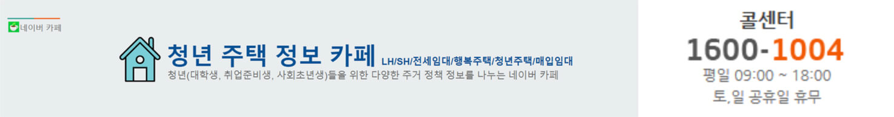
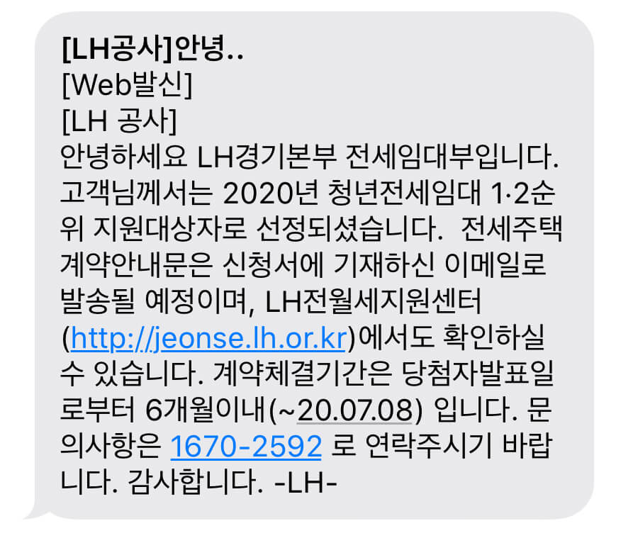
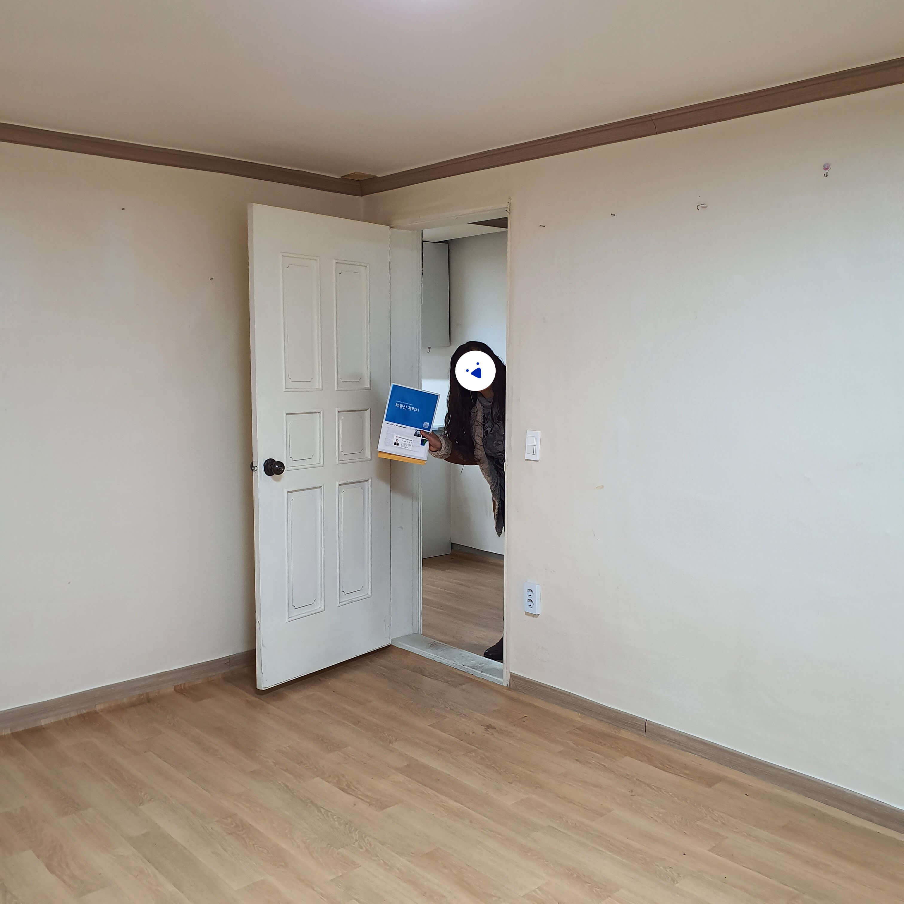
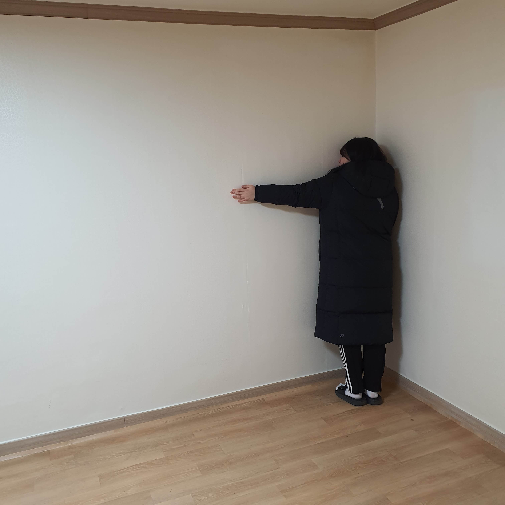

월세는 너무 부담돼
대학생이 되면서 내 로망이었던 자취를 시작하게 되었다. 하지만 자취를 준비하면서부터 가장 걱정이 된 건 역시나 월세다. 그러던 중 작년 9월, LH에서 전세자금대출을 해주는 제도가 있음을 알게 되었다.
LH전세자금대출이 뭐야?
LH전세자금대출은
정부에서 저소득 및 무주택자에게 저렴한 값에 전세자금을 대출해주는 제도
다. 나의 경우 대학생 전형을 이용해 집을 알아봤는데, 신혼부부나 청년들도 이 제도를 이용할 수 있다고 한다.
* 잠깐 꿀팁!
은행에서 청년 전세 대출 문의를 하면
자신에게 해당되는 청년 대출이 있는지 더 쉽게 알아볼 수 있다.
월세만 싼 게 아니야
사실 보증금과 월세만 싸게 낸다고 해도 솔깃한데 더 알아보니
중개수수료를 최대 36만원까지 지원
해주고, 원한다면 도배, 장판 비용도 60만원까지 지원
받을 수 있다는 얘기를 들었다. 그리고 엄마는 LH에서 철저하게 분석을 하고 계약을 하기 때문에 전세금이 날아갈 위험도 적다고 말씀하셨다.
그럼... 무슨 서류부터 준비할까요?
집 구하기 전 1 : 이용하면 이용할 수록 좋다!

본격적으로 서류 준비를 하니 모르는 게 너무 많이 나왔다.
대부분 네이버 청년 주택정보 카페를 통해 해결했지만, 혼자 해결하기 어려운 질문도 더러 있었다.
그런 질문들은 따로 모아 LH 콜센터를 통해 문의를 했다.
•'-'•)و✧
나:
도배, 장판 비용은 어떤 식으로 지원해주는 건가요?
ʚ(ȉˬȉ⁎)ɞ˒˒
상담사님:
입주자가 업체를 선정하여 담당자에게 시공요청서와 함께 알려주면
LH에서 업체를 알아본 후 승인 가능/불가능을 판단합니다.
지원 비용은 집 평수에 따라 약간의 차이가 있어요.
•'-'•)و✧
나:
가족 월평균 소득을 쓰는 칸이 있던데
월평균 소득을 정확히 모르면 어떻게 해야하나요?
ʚ(ȉˬȉ⁎)ɞ˒˒
상담사님:
어차피 서류 심사 과정에서 조사하기 때문에 대략적으로 적어주셔도 상관없어요.
너무 터무니없는 금액으로 적지만 않는다면 괜찮습니다.
전화 통화로 문의를 하니 많은 질문들을 보다 더 빨리 해결할 수 있어서 좋았지만
평일 9시~6시 사이에만 이용
할 수 있어서
자주 이용하기는 힘들었다.
이후, 궁금증이 생기면 되도록 카페 질문을 하고
정말 어려운 것들만 모아 전화를 하는 방식으로 궁금증을 해결했다.
서류통과:내 집을 찾아서
서류를 넣고 마음을 비우며 보내던 어느 날, 문자가 도착했다.

기쁨도 잠시, LH로 집을 구할 때 가장 어렵다는 발품 팔기 단계에 접어들었다. 인터넷에 검색하고, 어플로 알아보고, 부동산 블로그를 탐방하다가 우연히 전화했던 부동산에 LH 매물이 있다는 소식을 듣고, 곧장 보러 가기로 약속을 잡았다. 그리고 본 집은 내 생각보다 나쁘지 않아 바로 권리분석에 도전하기로 했다.
권리분석 : LH의 승인을 기다리며…
권리분석은 빠르게 진행됐다.
중개사님이 알아서 서류를 뽑고 작성할 부분을 알려주셔서 나는 그곳에 앉아서 작성하기만 했다. 법무사에 팩스를 보낸 후, 권리분석 넣는 사람이 많아 오래 기다려야 할 거라는 중개사님의 말씀을 듣고, 다시 마음을 비우고 기다리자 다짐하며 집으로 내려오던 도중 중개사님께 전화가 왔다.
“법무사쪽에서 바로 승인을 해줘서 이틀 후에 계약해요!”
권리분석 승인 : 진짜 집 계약하러 가자!
내 집 찾기는 내가 생각하고, 주위에서 들었던 것들보다 빠르게 진행되었다. 그 탓에 계약 날짜에 내가 계약하러 가질 못하는 상황이 벌어졌다. 원래는 법무사와 임대인, 입주인 세 명이 모여 계약을 해야하는 게 원칙이지만, 법무사에 사정을 얘기하고 부모님이 대신 계약을 했다.

“우리, 계약 성공했어요~❤️”
* 잠깐 꿀팁!
도배, 장판을 하고 싶다면
계약하는 날 도배 장판 신청서를 작성해서 가면 빠르다.
또 가능하다면 계약날 전입신고까지 하고 온다면
그 후부터는 마음 놓고 기다릴 수 있다.
이제는 내 집이다!

마이 스윗 홈...
계약 후 LH에서 잔금을 입금했다는 문자가 날아오면 비로소 2년간 내가 살 집이 마련된다. 준비부터 계약까지 정말 긴 시간이 걸렸지만 다시 작년으로 돌아가 도전할 거냐 묻는다면 난 당연히 예스!
혹시 자취방을 구하고싶은데 월세때문에 걱정인 사람이 있다면 이 제도를 적극 추천 해주고싶다.
월세 아껴서 더 맛있게 먹고 살자!